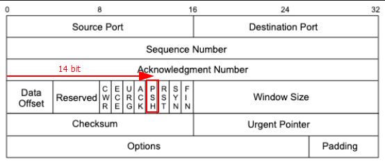

listening port 80
sudo tcpdump -i <interface> port <port> -n -vvv
sudo tcpdump -i tun0 icmp and host <ip from>
tcpdump -i <interface> -s 65535 -w <file>
tcpdump -r file.pcap
sudo tcpdump -n -r password_cracking.pcap
tcpdump -n src host 172.16.161.1 -r password_cracking.pcap
tcpdump -n dst host 172.16.161.1 -r password_cracking.pcap
tcpdump -n port 22 -r password_cracking.pcap
sudo tcpdump -A -n 'tcp[13] = 24' -r packet.pcap
wondering tcp[13]?
its PSH flag.

note:
-n : skip DNS name ookups
-r : read packet capture file
-X : for dump HEX and ASCII format
-s : capture full-sized packets
-w : write to a file
The PSH flag1 is used to enforce immediate delivery of a packet and is commonly used in interactive Application Layer protocols to avoid buffering.